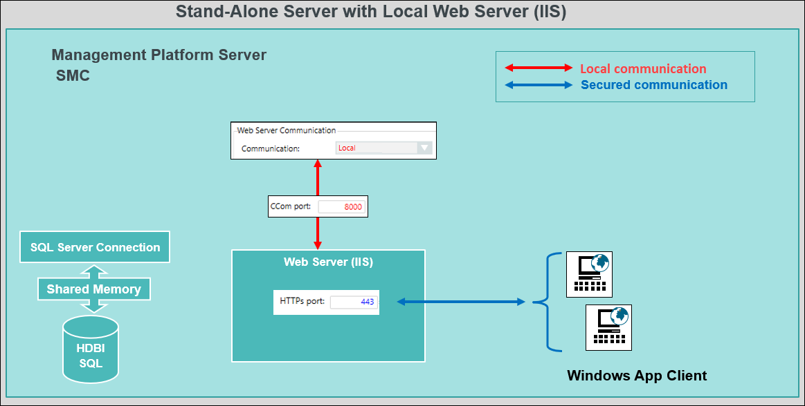

Stand-Alone System with Local Web Server (IIS)
You can install the web server (IIS) on the same computer as that of the Desigo CC Server and work with Windows App Client. When the web server (IIS) is installed on the same computer as the Desigo CC Server, it is called the local web server (IIS).
The communication between the Desigo CC Server and the local web server (IIS) can be left as a local communication (without certificates) as they both are hosted on the same stand-alone computer. The communication between the web server (IIS) and Windows App clients is always secured (using the web application certificate).

A stand-alone system with a local web server must be protected against attacks from other machines in the network. Follow the configuration guidelines to limit outside communication by firewall settings, virus scanner, and so forth to secure the system.